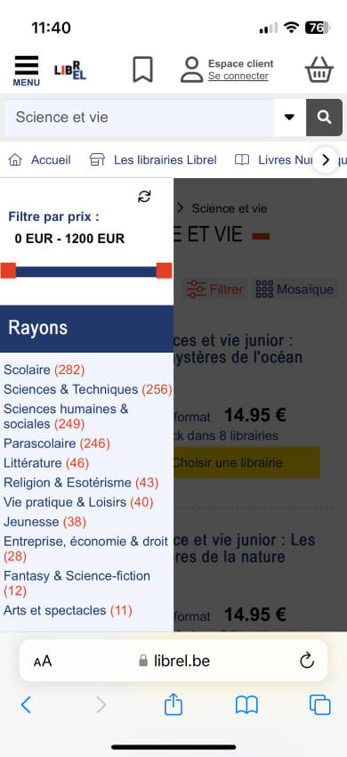
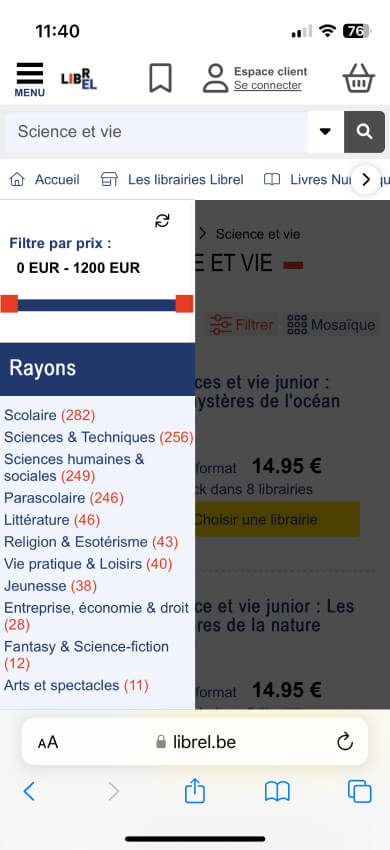

Préambule
Le but de ce projet scolaire était de faire des audits de différents sites internet de vente de livres afin d'y analyser les défauts et qualités, d'en prendre connaissance et de créer une application mobile fictive de vente de livres sans faire les même erreurs recensé dans les audits.
Mes tâches principales :
Idéation et Brainstorming.
Sur la base de mes observations sur les différents sites internet de ventes de livres, générer une liste d'idées pour améliorer l'expérience. Prioriser ces idées en fonction de leur impact potentiel et de la facilité de mise en œuvre.
Création de Wireframes :
Sélectionner une idée prioritaire à développer.
Créer un wireframe simple pour une ou plusieurs pages du site qui intègrent mes solutions. Je me suis concentré sur la mise en page et la navigation, plutôt que sur le design graphique.
Prototypage :
Si vous disposez des compétences et des outils nécessaires, transformez votre wireframe en un prototype interactif de basse fidélité.
Assurez-vous que le prototype reflète les étapes que l'utilisateur suivrait pour accomplir la tâche que vous avez identifiée.
Quelques réflexions lorsque j'ai fait le devoir.
En terme d'UX, est il pertinent d'aller observer comment fonctionne une vrai bibliothèque irl et observer les clients (comprendre leurs points de douleurs, leurs satisfaction, ...), puis reprendre les bonnes idées pour essayer de les appliquer sur un site e-commerce de revente de livre (carte de fidélité, organisation et classement, ...).
Itération en groupe
Nous étions 3 personnes à itérer sur des potentiels personas.
Au départ nous avions 7 personnas et après itération c'est finalement 2 personas qui se sont démarqués.
Un presona “acheteur indifférent et altruiste sans prédisposition à l'utilisation de le technologie” et un autre “bibliophile passionné numériquement averti”.
Voici comment nous avons réussi à créer ces deux personas.

 
